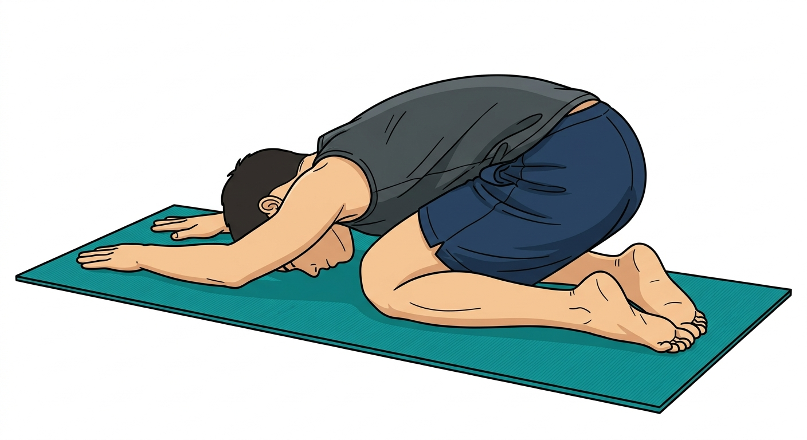
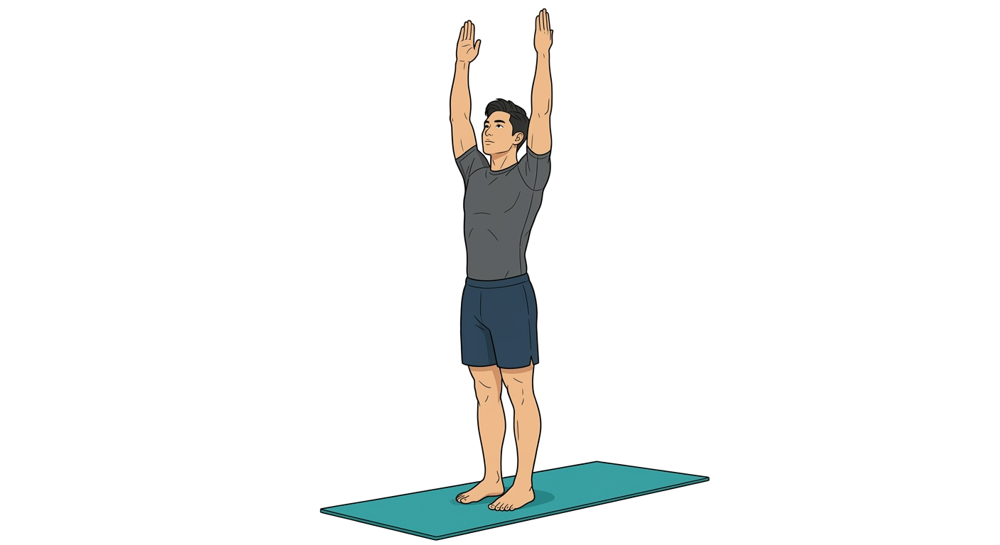
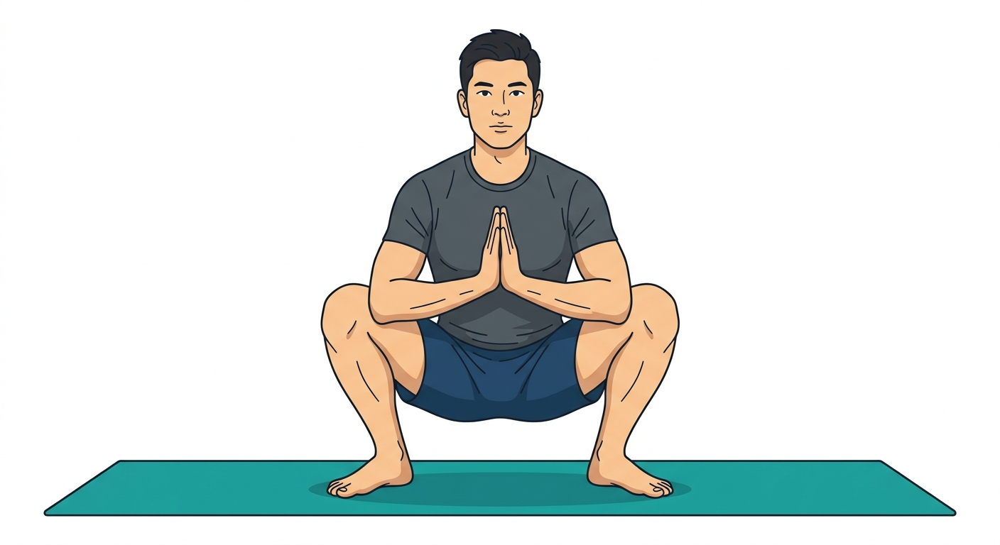
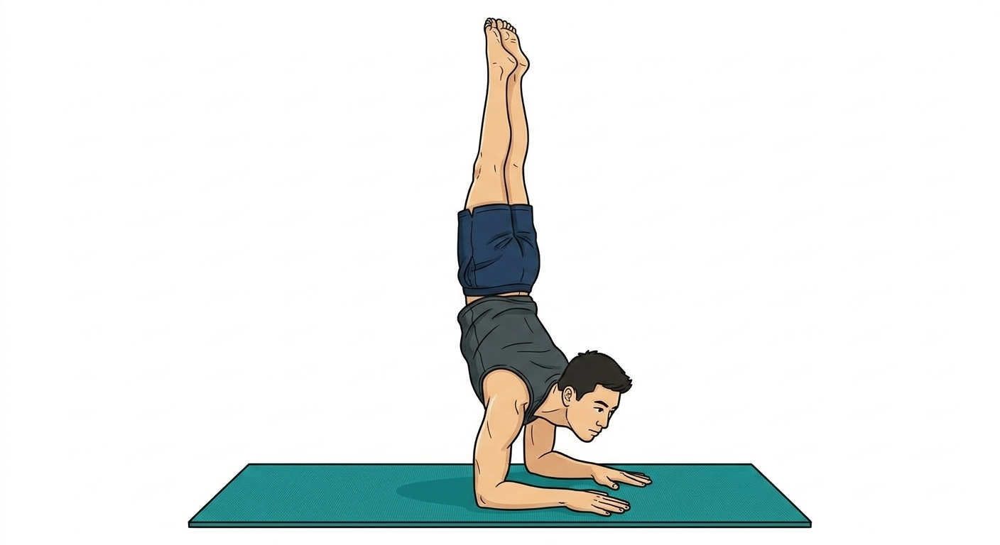
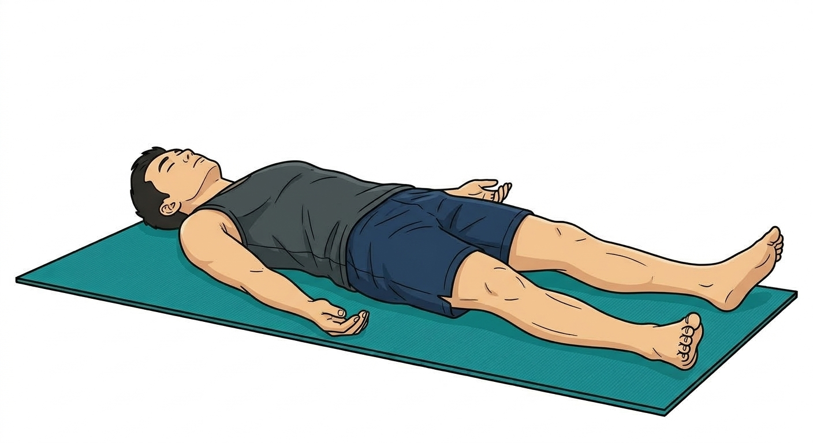

A sequence for HonWeng


3 rounds of Sun Salutation A, followed by 2 rounds of Sun Salutation B with deep Chair Poses.

Flow between Warrior II and Skandasana to open inner thighs.
Malasana (Garland Pose): 2 mins. Press knees open with elbows. Add a twist to each side.

Dolphin Pose: 2 mins. Foundation for Pincha. Forearms parallel.
Dolphin Push-ups: 1 min. Shift weight forward and back.
Pincha Mayurasana (Forearm Stand): 5 mins practice.

Pigeon Pose (1 min each side), Happy Baby, and final Savasana.